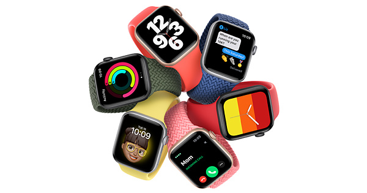
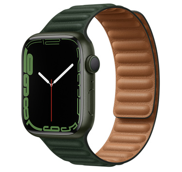
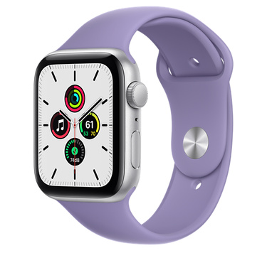
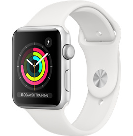

Hírek
iPhone
iPad
Mac
Apple Watch
AirPods
Apple Watch Series 7
Teljes kijelzővel előre
Indulóár: 159 990 Ft

Vásárlás
További információ
Apple Watch Series 7

Indulóár: 159 990 Ft
Vásárlás
Apple Watch SE

Indulóár: 109 990 Ft
Vásárlás
Apple Watch Series 3

Indulóár: 77 990 Ft
Vásárlás